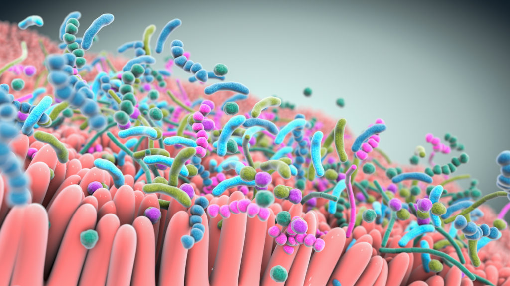

The human intestines have a variety of microbiomes that can provide indications about health aspects of certain population groups. To explore the relationship of microbiomes and health within population, the respective abundance distributions of the microbiomes can be investigated. The following interactive visualizations contain information about distributions and correlations of microbiomes and the corresponding population groups, as well as clustering of some interesting aspects of the abundances.
